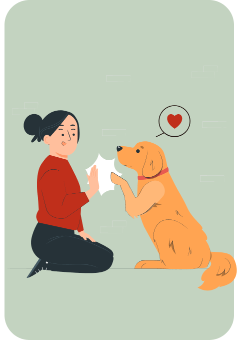

ОБУЧАЕМ СОБАК

ПОМОГАТЬ ЛЮДЯМ

Работаем с собаками-помощниками для людей с ментальными, неврологическими, эндокринными и другими заболеваниями.
НАША МИССИЯ
Реабилитация людей с хроническими заболеваниями с помощью специально обученных собак
КТО МЫ
Мы команда энтузиастов, которые работают с собаками-помощниками, способными облегчить людям жизнь
14
Кинологов
Кинологов
26
Благополучателей
Благополучателей
39
Волонтеров
Волонтеров

КОМУ МЫ МОЖЕМ ПОМОЧЬ
Гражданам РФ, достигшим 18 лет
У которых есть собака, подходящая для работы, или возможность её приобрести
Имеющим хронические заболевания, находящимся под контролем врача
ВОПРОСЫ И ОТВЕТЫ
Это платно?
Нет. Наш проект полностью благотворительный и направлен на реабилитацию людей
с хроническими заболеваниями с помощью собак-помощников.
Участие в программе совершенно бесплатно, однако, количество мест ограничено и ожидание обучения собаки-помощника может продлиться до 1 года. Если все места заняты, то вы можете записаться в следующую волну обучения.
Сколько длится обучение собаки?
Обучение может длиться от 6 до 18 месяцев в зависимости от сложности поставленных задач и таких факторов, как базовая кинологическая подготовка собаки, наличие проблем поведения, скорости обучения собаки и вашей готовности быстро пройти подготовительный период.
Перед обучением будет необходимо пройти этапы:
- 1. Видеоинтервью с руководителем организации или куратором вашего направления (зависит от вашего заболевания) совместно с главным кинологом проекта.
- 2. Заполнить необходимые анкеты.
- 3. Пройти тестирование вашей собаки (или щенка).
- 4. Проконсультироваться с врачом-психиатром нашего проекта.
Что, если у меня уже псть собака?
Если у вас уже есть собака, то мы готовы провести специальное тестирование на её рабочие качества: способность к обучению и к дрессировке, тип темперамента и психику. Мы предъявляем высокие требования к нервной системе, желанию работать и мотивации собак.
К сожалению, если ваша собака не покажет необходимого результата, мы не сможем приступить к обучению вашей собаки.
При желании взять другую собаку специально для работы, мы предоставляем нашу программу помощи выбора породы, заводчика и щенка.
.
Что, если у меня есть собака?
Ответ на этот вопрос.
С какими заболеваниями помогают собаки?
Собаки-помощники работают со множеством заболеваний от проблем с опорно-двигательным аппаратом до ментальных расстройств. Наш проект работает с людьми с эпилепсией, аллергией, диабетом, сердечно-сосудистыми заболеваниями, синдромом дефицита внимания и гиперактивности (СДВГ), расстройством аутистического спектра, тревожными расстройствами, аффективными расстройствами, шизофренией и другими ментальными расстройствами.
Подходят ли собаки из приюта?
В нашем проекте высокие требования к собакам-помощникам, как к служебным собакам: к рабочему потенциалу, к психическому и физическому здоровью, к нервной системе. От работы собаки-помощника зависит жизнь и благополучие человека.
К сожалению, в приютах сложно найти подходящую собаку для работы из-за травмирующих условий проживания и отсутствия должной социализации. Мы не можем гарантировать, что собака из приюта сможет подойти для работы и пройти тестирование.
При вашем желании, мы можем протестировать вашу собаку. Если собака не пройдёт тестирование, мы не сможем приступить к обучению и дальнейшей работе.
В таком случае мы можем вам помочь выбрать другую собаку (например, приобрести с помощью нашей "Выбираем щенка вместе"), чтобы быть уверены в рабочих качествах собаки.
Кто будет обучать собаку?
Обучать собаку будет кинолог из нашего проекта, который будет закреплен за вами. Занятия проходят индивидуально в подходящем вам режиме.
Мы тщательно отбираем и готовим наших кинологов: они проходят международное обучение, постоянно консультируются с профильными врачами, сдают экзамены на знание заболеваний, с которыми мы работаем, и находятся под контролем главного кинолога-методиста.
Руководитель направления и руководитель проекта стараются подобрать кинолога, с которым вам будет легко и комфортно работать. Ваш эмоциональный комфорт важен для прогресса обучения и психического здоровья.
Что, если я живу далеко?
У нас широкая география! При возможности мы стремимся подобрать кинолога ближе к вашему месту проживания. Если у вас нет возможности заниматься с кинологом оффлайн, то мы подбираем вам обучение с кинологом онлайн.
Мы всегда рады новым кинологам в нашем проекте! Если у вас или ваших знакомых есть кинологическое образование, то мы будем рады, если вы присоединитесь к нашему проекту или порекомендуете его для сотрудничества
ПОЛЕЗНО ЗНАТЬ